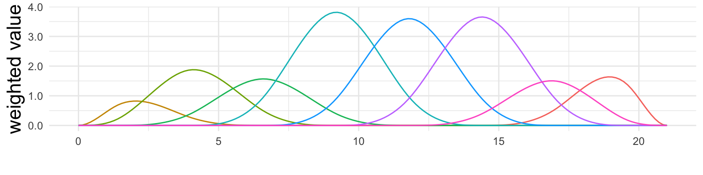
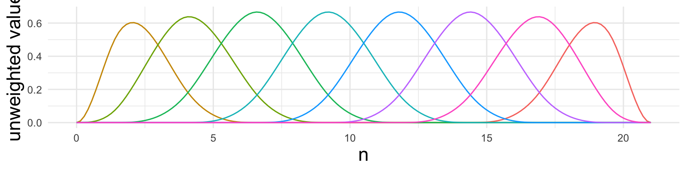
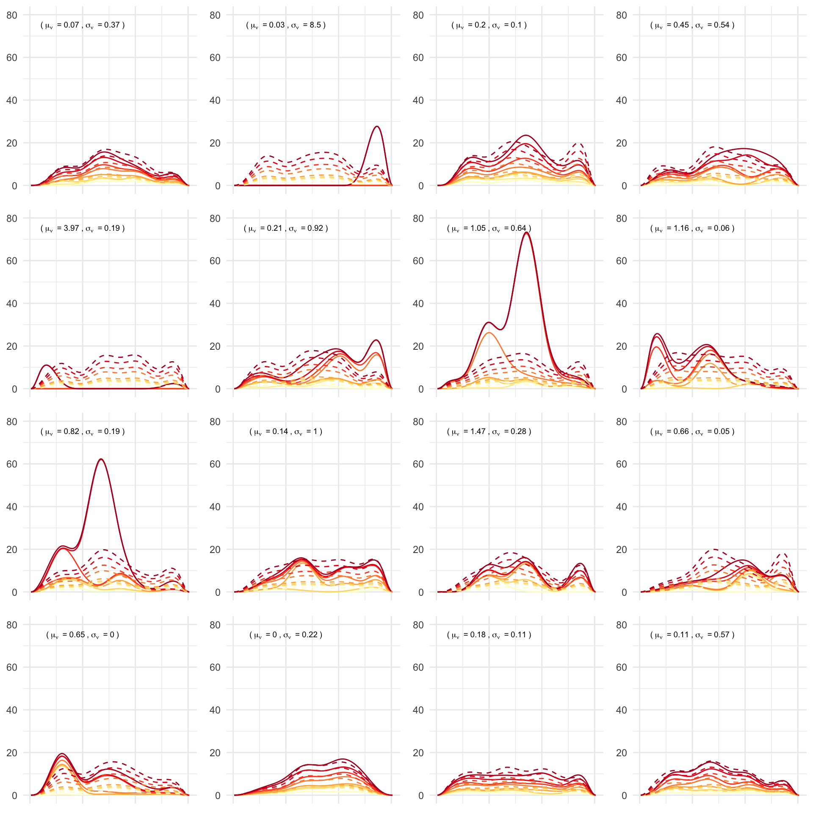
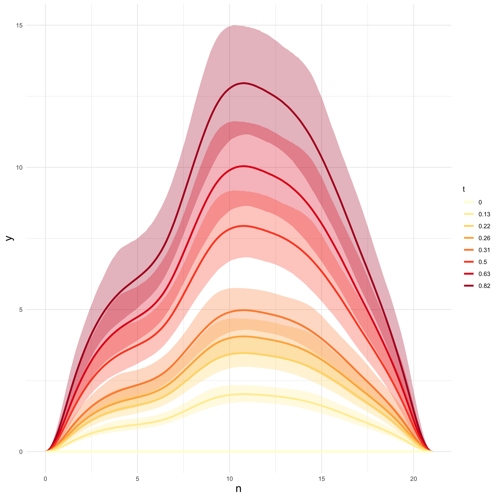

Centre for Transforming Maintenance through Data Science, Curtin University
Published
February 10, 2025
This Quarto document contains an adapted version of the sumplementary material for the manuscript Functional degradation modelling of the wearing surface of conveyor belting using Bayesian hierarchical modelling and Gamma processes. to produce the code in Chap. 6: Conveyor belt wear forecasting. This document acts as suplimentary material to the main text for readers who are interested in reproducing the analysis or just want to take a closer look at the the more technical aspects of the data, model fitting, diagnostics, and model evaluation.
The data we use are ultrasonic thickness (UT) measurements used to monitor the wear of the top coat on an overland conveyor belt. We use data from three belts all installed on the same overland conveyor at different points in time at one of our industry partners mine sites. Figure 1 below shows a typical overland conveyorbelt on the left and a scematic of the belts on the right. The structural component on of the belt is the carcas, which is protected by a tob and bottom coat of rubber. Typicaly the top-coat wears much faster than the bottom-coat because it is constantly being loaded with ore. To monitor the thickness of the topcoat, and therefore ensure the protection of the carcas, the thickness of the topcoat is monitored through UT testing. To demonstrate what the raw data looks like, on the cross section of the belt shown in the figure below, we have overlayed three sets of UT thickness measurements on the topcoat. Light blue is the earliest measurement and dark blue is the most recent. From the three wear profiles we can see the fairly typical “dishing out” of the topcoat as it is worn away by the ore over time.
Figure 1: Example of conveyor belt condition monitoring
The main belt that we will analise is Belt_A, the most recent belt. However, we use the data from historic belts Belt_B and Belt_C to construct an informative prior for some of the parameters in our model. Below we plot the raw data and show the UT data in a table below. Note that these data data are recorded in mm of wear, rather than remaining thickness like in the cross section of the belt shown in Figure 1.
To manage the reliability of the conveyor, engineers will typicaly specify a “soft failure threashold” which indicates the functional failure of the belt. They then try to forecast the belts wear to estimate when this soft failure will ocure in order to plan the replacement of the belt ahead of time.
Even though these belt wear data sets only have a few observations each, the observations themselves are fairly complicated. Our natural instincted when confronted with complex observations is to reduce the complexity so that we can use forecasting methods that we are famiar with. This approach is cominaly taken in practice when dealing with conveyor belt wear data. Bellow we show two typical aproaches used to forecast belt wear. Both use linear regression, the first uses the measurements from the fastest wearing location along the belts cross section as in Webb et al. (2020), while the second uses the maximum wear measurement from each profile-an approach used in many condition monitoring software.
For both of these linear approaches to forecasting wear, we can see that the future measurements have been over-predicted. But even more importantly, because we do not understand the distribution of these measurements, we have no way of quantifying our prediction uncertainty. In the remainder of this markdaown document we introduce a method that uses the entire wear profile to inform a pricipled model for belt wear, which allows us to properly quantify our uncertainty when forecasting the wear profile.
3 Our models
The Bayesian hierarchical models for belt wear, which we implement and fit in the probabalistic programing language Stan, are Gamma process\[
\begin{align*}
z_{i, n}|\underline{y}_{i}, \sigma \sim & N(f_i(n), \sigma) && \text{Data model: FDA} \\
f_i(n) = & \sum^{M}_{i = 1}b_m(n)y_{i, m} \\
\end{align*}
\tag{1}\]
Information about the notation as well as the intricasies regarding Bayesian heirarchical modeling, functional data alaysis (FDA), the noisy gamma process (GP), and choise of prior distributions are contained in chapter 6 of the main thesis.
3.1 B-spline design matrix
In the first level of the hierarchical models (in Equation 1 and Equation 4), we takes a functional interpretation of the UT measurements across the surface of the belt. That is, we asssume that the measurements are noisy observations of a smooth underlying function. We describe this smooth function using a B-spline. Figure 2 (a) shows the functional interpretation for the fith observation of Belt_A. The B-spline is composed of the weighted sum of a set of B-spline basis functions, we can see the weighted basis functions is Figure 2 (b) and the unweighted basis functions in Figure 2 (c).
(a) Fitted B-spline

(b) Weighted basis functions

(c) Unweighted basis functions
Figure 2: Fitted B-spline and basis funcitons for the fith observation of Belt_A.
However, we cant fit estimate the spline coeficients-the weights of the basis functions-using the continuous forms of the basis functions. To estimate the spline coeficients we the design matrix, a matrix containing the values of the basis functions at each discrete measurement location. We use the splines2 package to do this.
We have dropped some basis functions at the edges. We do this because we wish to constrain how “wigly” the spline can be at the edge of the belt, and also because we want the spline to be ancoured at 0 at the edges.
3.2 Informative prior
The two process models in Equation 2 and Equation 5 are set up so that we can encode information about the mean wear rate of spline coefficients by placing informative priors on the \(\mu_m\). This means that we can supliment the analysis with past data or domain expert knowledge. We have two previouse belt lives–Belt_B and Belt_C– which we can use to construct an informative prior for the \(\mu_m\). We can crudely estemate the mean degradation of the coeficients by fitting splines to each of the observations from the two historic belts and then fitting linear models to the relationship between the ceofficients values and tonnes. Figure 3 below shows the estimated linear fits.
Figure 3: Estimating mean wear rate of the spline paramters from historic belt data to construct an informative prior for \(\mu_m\).
The prior for the \(\mu_m\) are normaly distributed. Therefore to compose a mildly informative prior, we set the mean of these distributions to the estimated slope of the linear fit and the standard deviation to the distribution to be five times the standard deviation of the estimated slopes.
3.3 Prior predictive checks
Now that we have specified the full prior model in the form of a group of marginal distributions, each of the marginal priors make sense on their own, but it is important to make sure that the prior we have specified encodes what we intended in the space of the data. To check this we can use prior predictive checking Gabry et al. (2019). Using the informative prior developed for \(\mu_m\) in the previous section and the specified priors for the other parameters in Equation 3 and Equation 6, we can simulate data from our Bayesian model and then visualise this data to check that our specified priors encode what we originaly intended.
The priors that we have specified for the varinace parameters are extreemly vaigue, and so we only perform prior predictive checks for the “non-noisy” wear profiles. In Figure 4 below, we simulate sixteen fictitious belt wear data sets from the prior.

Figure 4: Sixteen synthetic non-noisy belt wear data sets generated using the prior, otherwise known as prior predictive checks.
Out of the sixteen prior predictive realisations in Figure 4, roughly twelve of them look like feasible beltwear data sets. Of the few that do not look feisible, two profiles have unreasonable scales (more than a 100mm jump in wear) and the remainder don’t look feisable because of a lack of larege scale spacial corelation. This last point regarding the lack of spatial corelation is a charecteristic of the models structue, not the prior. We have not included any spacial dependance in the model for the spline coeficients, but this will be explored in future work. Considering that only two of the simulated data sets look completely unreasonable based on our understanding of the data generateing mechanism, we consider this prior to be a sufficient weekly informative prior for the analysis.
4 Stan models
To fit the model we use the probabalistic programing language Stan (Stan Development Team 2022). Bellow I define each of the
4.1 LM
data{// data //int I; // number of observationsint N; // number of measurement locationsint M; // number of spline basisvector[I] t; // the set of observation timesmatrix[I, N] z; // the set of noisy UT measurementsmatrix[N, M] B; // the B-spline design matrix// hyper parameters for mu //vector[M] a_hat; // our estimate of the mean wear ratevector[M] b_hat; // our uncertanty of this estimate}parameters{vector<lower = 0>[M] mu; // the mean wear rates of the gamma processesreal<lower = 0> sigma; // the standard deviation of the measurement error at UT levelreal<lower = 0> phi; // the standard deviation of the measurement error at coef levelmatrix<lower = 0>[I, M] y_noisy; // the filtered values of the spline coeficients}transformed parameters{matrix[I, N] z_hat; // smoothed UT observations (functional obs)matrix<lower = 0>[I, M] y; // the filtered values of the spline coeficients// calculate the mean degradation at time ty = t * mu';y[1, ] = y[1, ] + 0.0001;// calculate value of spline at measurement locationsz_hat = y_noisy * B';}model{/// priors ///// for process model// mufor (m in1:M) { mu[m] ~ normal(a_hat[m], b_hat[m]);}// phiphi ~ cauchy(0, 25);// sigmasigma ~ uniform(0, 100);/// linear model ///for (i in1:I) { y_noisy[i, ] ~ student_t(10, y[i, ], y[i, ]*phi);}/// data model ///for (i in1:I) { z[i, ] ~ normal(z_hat[i, ], sigma);}}
For computational reasons we use a reparameterisation of the student-t distribution recomended in the Stan user manual.
data{// data //int I; // number of observationsint N; // number of measurement locationsint M; // number of spline basisvector[I] t; // the set of observation timesmatrix[I, N] z; // the set of noisy UT measurementsmatrix[N, M] B; // the B-spline design matrix// hyper parameters for mu //vector[M] a_hat; // our estimate of the mean wear ratevector[M] b_hat; // our uncertanty of this estimate}transformed data{vector[I - 1] t_diff; // The time steps between each observation// calculate the time steps //t_diff = t[2:I] - t[1:I-1];}parameters{vector<lower = 0>[M] mu; // the mean wear rates of the gamma processesreal<lower = 0> nu_a; // reparam of t_3 prior for nureal<lower = 0> nu_b; // ""real<lower = 0> nu_sd; // the sd of the random effect on nuvector<lower = 0>[M] nu; // CoVs of the gamma processesreal<lower = 0> sigma; // the standard deviation of the measurement error at UT levelreal<lower = 0> phi; // the standard deviation of the measurement error at coef levelmatrix<lower = 0>[I - 1, M] y_diff; // the jumps in degradation of each coeficientmatrix[I - 1, M] y_noisy; // the noisy coeficient values}transformed parameters{real<lower = 0> nu_mean; // the mean of the random effect on numatrix<lower = 0>[I - 1, M] y; // the filtered values of the spline coeficientsmatrix[I, N] z_hat; // smoothed UT observations (functional obs)// reparam of nu_meannu_mean = nu_a / sqrt(nu_b);// calculate the coef values from the stochastic jumpsfor (m in1:M) { y[, m] = cumulative_sum(y_diff[, m]);}// asume the belt is flat at time zerofor (n in1:N){ z_hat[1, n] = 0;}// calculate value of spline at measurement locationsz_hat[2:I, ] = y_noisy * B';}model{/// priors ///// for process model// nunu_a ~ normal(0, 0.5);nu_b ~ gamma((0.5 * 3), (0.5 * 3));nu_sd ~ cauchy(0, 0.5);nu ~ normal(nu_mean, nu_sd);// mufor (m in1:M) { mu[m] ~ normal(a_hat[m], b_hat[m]);}// for data modelsigma ~ uniform(0, 100);phi ~ cauchy(0, 25);/// process model ///// GP // |the average wear rate parameter is applied in the next |// |step, but is equivelant to scale = 1 / (mu * nu^2) |for (m in1:M){ y_diff[, m] ~ gamma(t_diff / pow(nu[m], 2), 1 / (pow(nu[m], 2)));}// Noisy obsfor (i in1:(I - 1)){for (m in1:M){ y_noisy[i, m] ~ student_t(10, mu[m] * y[i, m], (phi * mu[m] * y[i, m])); }}/// data model ///for (i in1:I) { z[i, ] ~ normal(z_hat[i, ], sigma);}}
5 Sampling
Now that we have specified the model is Stan, we can used the no-U-turn MCMC sampler to obtain draws from the posterior. Below we generate X draws from the posterior using 4 chains each 3000 iterations in length with a burn in of 1000 and no thinning.
# Arange data in list for Stanstan_data_full <-list(I =length(t[1:8]),N =ncol(Ut_matrix),M =ncol(B),t = t[1:8],z = Ut_matrix[1:8, ],B = B[2:21, ],a_hat =lapply(coef_lm_fits, function(m) m["a_hat"]) %>%unlist(),b_hat =lapply(coef_lm_fits, function(m) m["b_hat"]) %>%unlist() *5)
As a first pass check, we can look at the summaries of the main parameters and some simple sampling diagnostic values such as effective sample size and \(\hat{R}\)(Gelman et al. 2020, 285–87).
To assume that the samples sufficiently represent the target distribution the value of \(\hat{R}\) should be less than \(1.05\) and there should be at least \(10\) effective samples per chain (Gelman et al. 2020, 287).
Finaly, there was a few divergencies during sampling (about \(0.9\%\) of the total number of draws). We can use a parallel coordinate plot with the divergent transitions plotted in red to see if these divergencies are a problem. If the divergent paths show a a clear structure through parameter space then this is a sign that there is degenerate behavior in the posterior. There is signs of two structures, one set that passes through values of \(\nu_{sd}\) very close to zero, and another that draws a clear line through parameter space. I believe that the troublesome sampling when \(\nu_{sd}\) is close to zero is a fairly typical issue with the variance of random effects when the data do not clearly demonstrate the existence of such an effect-e.g. it is possible that all spline coefficients have the same value of \(\nu\), meaning that the variance of the random effect would be zero. The second clear structure through parameter space is most likely due to the same issues as in Leadbetter, Caceres, and Phatak (2024), where there is not enough information in the data to completely separate the volatility of the gamma process and the variance of the noise; see recommendations in Leadbetter, Caceres, and Phatak (2024) on how this could be removed. But as we can see in the next section, it doesn’t appear that these divergent transitions have created any multimodality in the posterior and so I do not believe they are a major issue.
Figure 5: Prallel coordinate plot for the main parameters.
Figure 6: Prallel coordinate plot for the main parameters.
6 Posterior
The stan posterior object stan_fit_full contains a multidimentional posterior that holds withing it what we have learnt from the data. While it is hard to visualise the full posterior, some ways that we can visualise the posterior is by looking at the seperate marginal distribution of the parameters, the marginal distribution of intermediate(or unobservable-values), or posterior predictive distributions.
6.1 Marginal
The marginal distributions of the parameters show us directly our new belief after the prior distribution for each parameter has been updated by the data. From the marginal posteriors of the \(\mu_m\) in Figure 7 and Figure 8 A, we can see that the models have identified that the “dishing out” behaviour is part of the driving underlying process. In the gamma process model (Figure 7), we can also see that there is not a large variation in the \(\nu_m\); i.e. there is not a lot of variation in how “jumpy” the wear in different parts of the belt is-for other conveyor belts this could be very different. Lastly, the mass of \(\nu_{mean}\) is reasonably far from zero, sugesting that the underlying degradation process is indeed not linear like we first suspected.
Figure 7: The marginal posterior distributions of the model parameters.
Figure 8: The marginal posterior distributions of the model parameters.
We can also plot the marginal posteriors and overlay the prior to see how much updating has occured. Doing so, we can also check for signs that the data have not informed the parameter or if there is conflicting information between the prior and the data. I do this in below for the gamma process model.
Figure 9: Comparison of the marginal prior and posterior for \(\mu\).
Figure 10: Comparison of the marginal prior and posterior for the hyper parameters of \(\nu\).
Figure 11: Comparison of the marginal prior and posterior for \(\sigma\) and \(\phi\).
6.2 Intermediate values
Bayesian computation (MCMC sampling) treets missing or unobservable quantities the same as parameters. Therefore the full posterior also contains posterior samples for the unobservable \(y_{i, m}\) and \(y^*_{i, m}\). The marginal posterior of the \(y^*_{i, m}\)-the filtered values of the spline coeficients-give us a good insight into the variability of the underlying fitted Gamma processes which are suposedly driving the evolution of the wear profile. We can visualise this distribution in two ways; we can look at the values of the coeficients directly, or we can visualise the smooth mean wear profiles that result from the coeficient values.
6.2.1 Filtered spline coefs
Figure 12 and Figure 13 below show a gif cycling through one hundred draws from the posterior distribution of the \(y^*_{i, m}\) from each model. Essentialy it is showing us the different posible filterd coeficient pathways. The gray siloets in the background are the other 99 draws that we are cycling through.
Figure 12: An animation of 100 different samples of the filtered spline coeficient paths from the gamma process model. The colours corespond to the basis functions in Figure 2.
Figure 13: An animation of 100 different samples of the filtered spline coeficient paths from the general path model. The colours corespond to the basis functions in Figure 2.
Figure 12 does a good job at demonstrainting that while the posterior mean of each filtered path from the gamma process (like the one included in the paper) may look smooth, there are some fairly jumpy processes in the posterior. Whereas, for the linear general path model in Figure 13, all of the draws are perfectly strait (as one would expect).
6.2.2 Mean wear profiles
Alternatively, we can calculate the set of smooth spline function for each draw of the \(\{y^*_{i, m}\}^{I, M}_{i = 1, m = 1}\) by applying the coeficients to the B-spline basis functions and then calculateing the value of the smooth wear profile across the width of the belt. These distributions are shown in Figure 14 and Figure 15 for the gamma process and general path models, respectively. What we see is a gradual monotonic growth of the profile with a reasonable amount of uncertainty around what is the average profile along the length of the belt at each observation time.
Figure 14: The mean wear profile of the belt at each observation time from the fitted gamma process model.

Figure 15: The mean wear profile of the belt at each observation time from the fitted general path model.
6.3 Posterior predictive distributions
Even though for this particular aplication we are not interested in predicting the value of new measurements at the same time or locations as the observations, posterior predictive distributions (PPD) are a means of sense checking our fitted model. In this BHM, there are two different levels that we can generate a PPD; either the distribution of new UT measurements at the same time and location along the length of the belt; or new functional observations at the same times but at alternative locations along the length of the belt.
6.3.1 PPD of UT measurements
From the lowest level of the heirarchical posterior we can generate the predictive distribution for new UT measurements across the width of the belt at the same time and location along its length as the observed data. This essentialy shows us the fitted wear profile for each of the functional observations and the measurement uncertainty around the UT measurements that make up those profiles. The PPD of new UT measurements is generated by first extracting the noisy spline coeficient draws, the \(y_{i, m}\), and the draws of \(\sigma\) from the posterior and then pushing the values back through the data model. That is, calculating the values of the B-spline at the measurement locations and then adding measurement noise by simulating from \(z_{i, n} \sim N(f_i(n), \sigma)\) for every set of posterior draws.
The posterior predictive distribution of new UT measurements taken at the same time and location along the length fo the belt.
The posterior predictive distribution of new UT measurements taken at the same time and location along the length fo the belt.
The PPD shows that the model is reasonably flexible, enough to fit the observed profiles and the \(98\%\) uncertainty bands appear well calebrated; sinse most of observed UT data sits withing the bands.
6.3.2 PPD wear profiles
Alternatively we can generate the posterior predictive distribution of new functional observations at different locations along the length of the belt but at the same times as the observed data. To generate this second type of PPD we extract the posterior draws of the filtered spline coefficients, \(y^*_{i, m}\), and of \(\phi\). We then simulate new noisy spline coeficients by passing the draws back through the noisy component of the noisy gamma process; \(y_{i, m} \sim t_{10}(y^*_{i, m}, \phi y^*_{i, m})\). This gives us a predictive distributions for the \(y_{i, m}\) which we can then tern into a distribution of new functional observations through \(f_i(.) = \sum^M_{m = 1}y_{i, m}b_m(.)\).
The posterior predictive distributions of new functional observations taken at the same time but at different location along the length fo the belt.
The posterior predictive distributions of new functional observations taken at the same time but at different location along the length fo the belt.
From the PPD of the functional observations, we can see the growth in uncertainty over time. This makes sense, sinse the variability in the profiles along the length of the belt should increase with time sinse the wear of the belt at each location occures from the cyclic loading of ore onto that part of the belt and the loading is not homogenious.
7 Forecast
Using the posterior draws we can generate a forecast of the belts wear by stepping the process models forward from the most recent fitted observation. The code below produces a forecast at \(t_9\) from the fitted observations up to \(t_8\).
Using the posterior we can also generate a failure time distribution for the belt conditioned on the degradation observations. Since there is no closed form in this case, we must calculate the CDF numerical which is constitutionally heavy and so we do this in another R file (ft-cdf.R) but visualise the distributions here.
Figure 17: The failure time CDFs for the belt when the linear general path model is fit to observations A) 1 to 8 and B) 1 to 9.
References
Gabry, Jonah, Daniel Simpson, Aki Vehtari, Michael Betancourt, and Andrew Gelman. 2019. “Visualization in Bayesian Workflow.”Journal of the Royal Statistical Society Series A: Statistics in Society 182 (2): 389–402.
Gelman, A., J. B. Carlin, H. S. Stern, D. B. Dunson, A. Vehtari, and D. B. Rubin. 2020. Bayesian Data Analysis, Third Edition. Boca Raton, FL: Taylor & Francis.
Leadbetter, Ryan, Gabriel Gonzalez Caceres, and Aloke Phatak. 2024. “Bayesian Hierarchical Modelling of Noisy Gamma Processes: Model Formulation, Identifiability, Model Fitting, and Extensions to Unit-to-Unit Variability.”https://arxiv.org/abs/2406.11216.
Stan Development Team. 2022. Stan Modeling Language Users Guide and Reference Manual (version 2.31). https://mc-stan.org.
Webb, Callum, Joanna Sikorska, Ramzan Nazim Khan, and Melinda Hodkiewicz. 2020. “Developing and Evaluating Predictive Conveyor Belt Wear Models.”Data-Centric Engineering 1: e3. https://doi.org/10.1017/dce.2020.1.